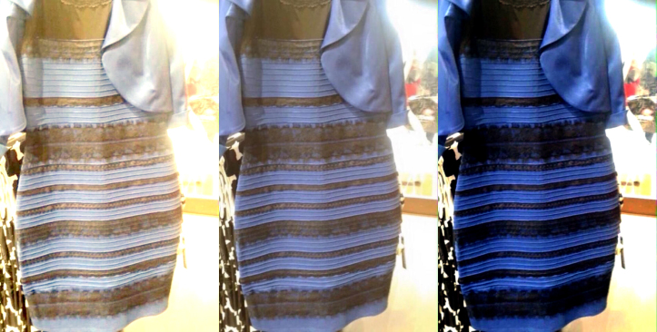
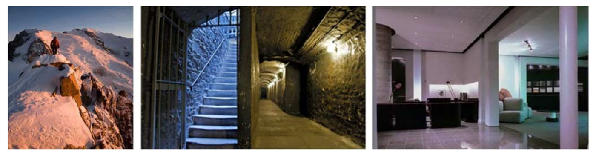
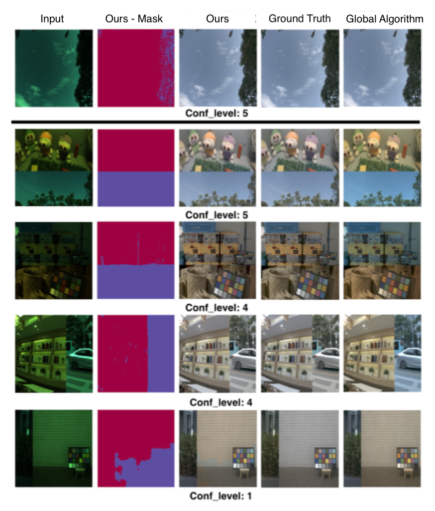
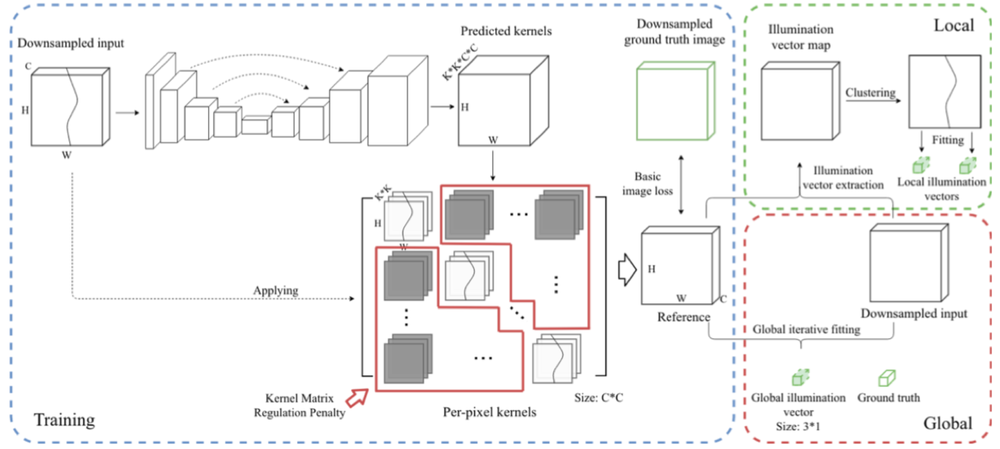
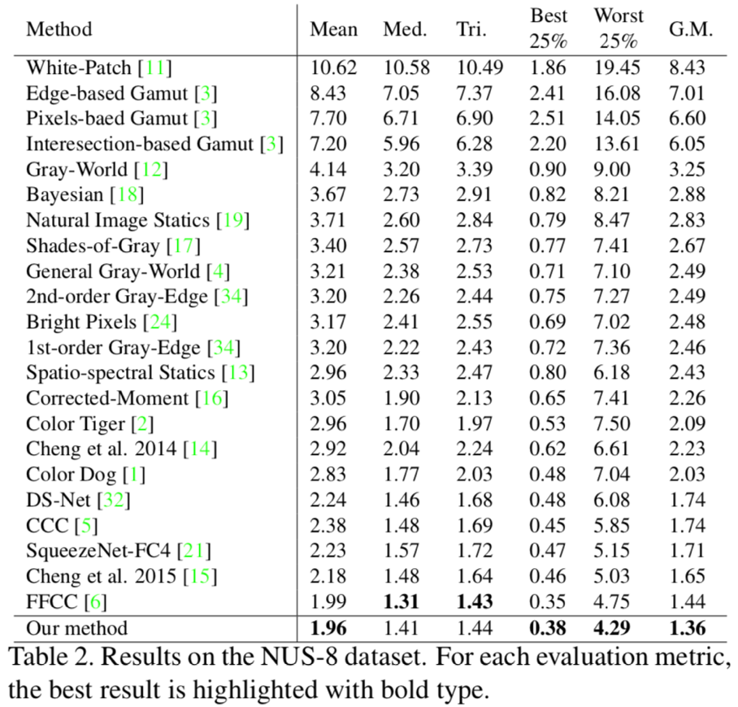
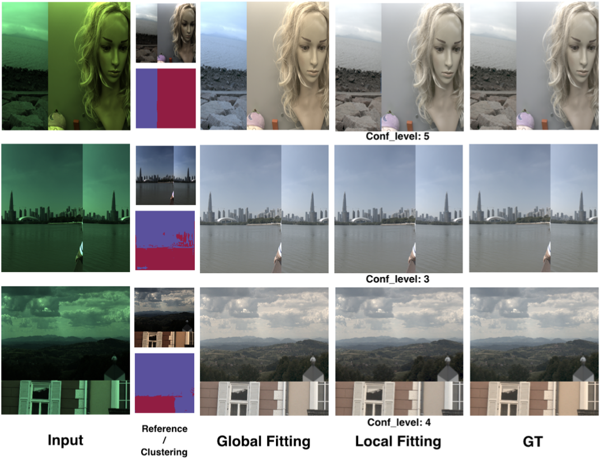

Adaptive Local Color Constancy using Kernel Prediction Networks
This is an article for introducing a work done with my colleague on the topic of locally compute auto color constancy. You could access the paper on arxiv and source code on github.
Background
First let’s see what conventional color consistancy does. You can see what color consistancy from following famous picture:

The center picture is original, you can see that environment light color is biased to gold-ish. The right one is result that environment color bias has been removed. The left one is otherwise opposite, the color bias is enhanced. Color constancy is the process that remove environment color bias to rveal truth object color like the right one above.
The conventional color constancy algorithm could be written in following matrix form:
$$
\begin{pmatrix}
R’ \\
G’ \\
B’
\end{pmatrix}
=\begin{pmatrix}
e^R & 0 & 0 \\
0 & e^G & 0 \\
0 & 0 & e^B
\end{pmatrix}
\begin{pmatrix}
R \\
G \\
B
\end{pmatrix}
$$
where $R, G, B$ are original image pixel value, $e^R, e^G, e^B$ are scalar value for each color band, $R’, G’, B’$ are pixel value after color constancy. This means for all pixel in image, we have three factors $e^R, e^G, e^B$ to adjust image color (i.e. global algorithm).
Motivation
However, the conventional algorithm may have difficulties in some situations. For example, the following scenes:

These scenes have different light sources at different image location, and it might not suitable for applying global illuminant algorithms. Following are result comparison of our method and global color constancy:

Strategy
The strategy we tried is extend the color constancy equation, and we trained a neural network to do solve the equation. We did following tryings to extend equation:
To each pixel $i$, let them have different adjust scalars:
$$
\begin{pmatrix}
R’_i \\
G’_i \\
B’_i
\end{pmatrix}
=\begin{pmatrix}
e^R_i & 0 & 0 \\
0 & e^G_i & 0 \\
0 & 0 & e^B_i
\end{pmatrix}
\begin{pmatrix}
R_i \\
G_i \\
B_i
\end{pmatrix}
$$To utilize not only the current pixel, but also pixels around it (Bold means k$\times$k pixel patch):
$$
\begin{pmatrix}
R’_i \\
G’_i \\
B’_i
\end{pmatrix}
=\begin{pmatrix}
\mathbf{e}^R_i & 0 & 0 \\
0 & \mathbf{e}^G_i & 0 \\
0 & 0 & \mathbf{e}^B_i
\end{pmatrix}
\begin{pmatrix}
\mathbf{R}_i \\
\mathbf{G}_i \\
\mathbf{B}_i
\end{pmatrix}
$$The multiplication is the sum of element-wise multiplication, e.g.
$$
\mathbf{e}^R_i\mathbf{R_i}=\sum_{j=1}^{k\times k} e^R_{ij}\times R_{ij}
$$By the experiments on second step, results are still not good enough. Then we tried to add information from other color bands (like CCM - Color Correction Matrix):
$$
\begin{pmatrix}
R’_i \\
G’_i \\
B’_i
\end{pmatrix}
=\begin{pmatrix}
\mathbf{e’}^R_i & \mathbf{e’}^G_i & \mathbf{e’}^B_i \\
\mathbf{e’’}^R_i & \mathbf{e’’}^G_i & \mathbf{e’’}^B_i \\
\mathbf{e’’’}^R_i & \mathbf{e’’’}^G_i & \mathbf{e’’’}^B_i
\end{pmatrix}
\begin{pmatrix}
\mathbf{R}_i \\
\mathbf{G}_i \\
\mathbf{B}_i
\end{pmatrix}
$$But it will make our algorithm ambiguous from color constancy and CCM, so we add penalty loss at $e$ values that not lying on diagonal:
$$
Loss_{panalty} = \mathbf{e’}^G_i + \mathbf{e’}^B_i + \mathbf{e’’}^B_i + \mathbf{e’’}^R_i + \mathbf{e’’’}^R_i + \mathbf{e’’’}^G_i
$$
Network structure
Now I will introduce how we implement the extended equation by neural networks. Given an input image, we use a U-Net to extract kernels ($\mathbf{e}$ matrix above) for every input pixels. The kernels is then directly used for generate a sample corrected image (Reference Image):

The trainning is processed to minimize the difference between Reference and Ground Truth image, and $Loss_{panalty}$:
$$
Loss = Diff(GT-Reference) + Loss_{panalty}
$$
Confidence value
In our framework, we also extract a confidence value to indicate how confidence the network is about a certain input image. The confidence value is how much diagonal value contribute in $\mathbf{e}$ matrix (If non-diagonal part are all zero values, the confidence is max). The confidence calculation is written in Section 3.3 in our paper.
Evaluation
For evaluation, because current color constancy dataset only have global $\mathbf{e}$ value, we divide reference by input image to get a global value ($e_{global}=\frac{I_{Reference}}{I_{Input}}$). Following is result metric of our method and compatitive algorithm:

And here are more examples of our algorithm:

For more evaluation results, you could access supplementary here.
Citation
@article{liu2019self,
title={Self-adaptive Single and Multi-illuminant Estimation Framework based on Deep Learning},
author={Liu, Yongjie and Shen, Sijie},
journal={arXiv preprint arXiv:1902.04705},
year={2019}
}